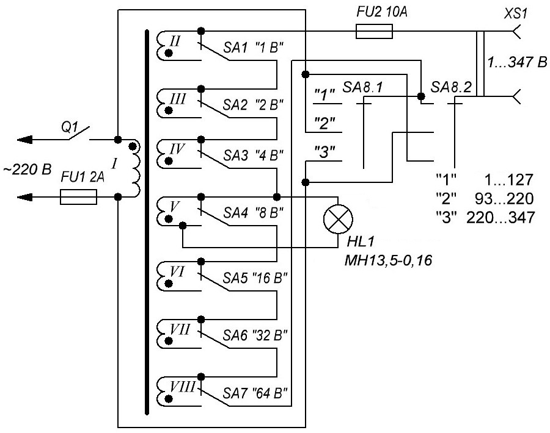
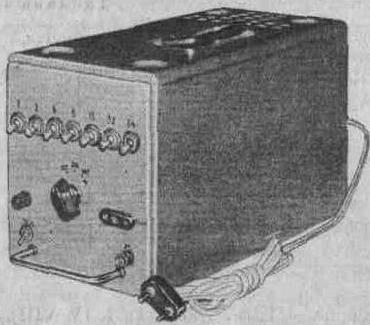

Лабораторный трансформатор
При разработке различных устройств возникает необходимость регулирования переменного сетевого напряжения. Если при этом допускается искажение синусоидальной формы напряжения, можно применять тринисторные регуляторы. Если же требуется синусоидальное напряжение, необходимо применять трансформатор. Удобным является лабораторный автотрансформатор (например, типа ЛАТР-2М), обмотка которого намотана на тороидальном магнитопроводе, а подвижный контакт скользит по торцевой поверхности обмотки (предварительно очищенной от изоляции).
Однако такие трансформаторы весьма дефицитны. Кроме того, надежность подвижного контакта со временем ухудшается. Гальваническая связь с сетью выходных зажимов также не всегда допустима.

Рис. 1 - Схема лабораторного трансформатора
Устройство, схема которого представлена на рис. 1, позволяет изменять синусоидальное напряжение на нагрузке в пределах от 1 до 347 В ступенями через 1 В, при этом на поддиапазоне изменения напряжений 1...127 В гальваническая связь с сетью отсутствует. Допустимый выходной ток определяется наименьшим сечением провода обмотки из всех обмоток, участвующих в образовании требуемого напряжения, при этом максимальная мощность не должна превышать 170 Вт.
Регулирование напряжения осуществляется в трех поддиапазонах, тот или иной диапазон выбирается переключателем SA8. В первом поддиапазоне в формировании выходного напряжения участвуют обмотки II-VIII трансформатора Т1. Напряжения обмоток имеют значения, равные степеням числа 2: 20, 21, ..., 26. Таким образом, путем последовательного соединения требуемых обмоток можно получить любое напряжение от 1 до 127 В ступенями через 1 В. Соединение обмоток производится переключателями SA1-SA7. В показанном на схеме положении переключателей все обмотки выключены.
В положении "2" переключателя SA8 вторичные обмотки трансформатора включаются последовательно-встречно с первичной обмоткой, и их напряжения вычитаются. Следовательно, результирующее выходное напряжение может изменятся от 93 В (220 В - 127 В) , когда все вторичные обмотки выключены.
В положении "3" переключателя SA8 вторичные обмотки трансформатора соединяются последовательно согласно с первичной обмоткой, так что их напряжение, когда вторичные обмотки включены, составляет 220 В (220 В±0 В); максимальное выходное напряжение, когда в работу включены все вторичные обмотки, составляет 347 В (220 В + 127 В).
Трансформатор Т1 выполнен на магнитофоне ШЛ25×40. Намоточные данные всех обмоток и максимальные токи представлены в табл. 1. Начала обмоток на принципиальной схеме обозначены точками. Тип обмоточного провода - ПЭВ-2 (обмотки I, IV-VIII), ПБД (обмотки II-III).
Таблица 1
| Номер обмотки | Напряжение обмотки, В | Число витков | Диаметр провода, мм | Ток обмотки, А |
|---|---|---|---|---|
| I | 220 | 846 | 0,68 | 0,8 |
| II | 1 | 4,5 | 2,44 | 10 |
| III | 2 | 9 | 2,44 | 10 |
| IV | 4 | 17 | 1,6 | 4,6 |
| V | 8 | 34 | 1,5 | 4 |
| VI | 16 | 68 | 1,5 | 4 |
| VII | 32 | 136 | 0,8 | 1,1 |
| VIII | 64 | 272 | 0,6 | 0,6 |
Первой наматывают обмотку I, затем VIII, VII, ..., II. В качестве выключателя питания Q1, переключателей SA1-SA7 можно использовать тумблеры типа ТВ 1-4, ТВ2-1 или ТП1-2. Галетный переключатель SA8 - ПГК-3П6Н, причем для повышения надежности контакты объединены в два переключателя по три группы контактов в каждом. Внешний вид лабораторного трансформатора представлен на рис. 2.

Рис. 2. - Внешний вид лабораторного трансформатора